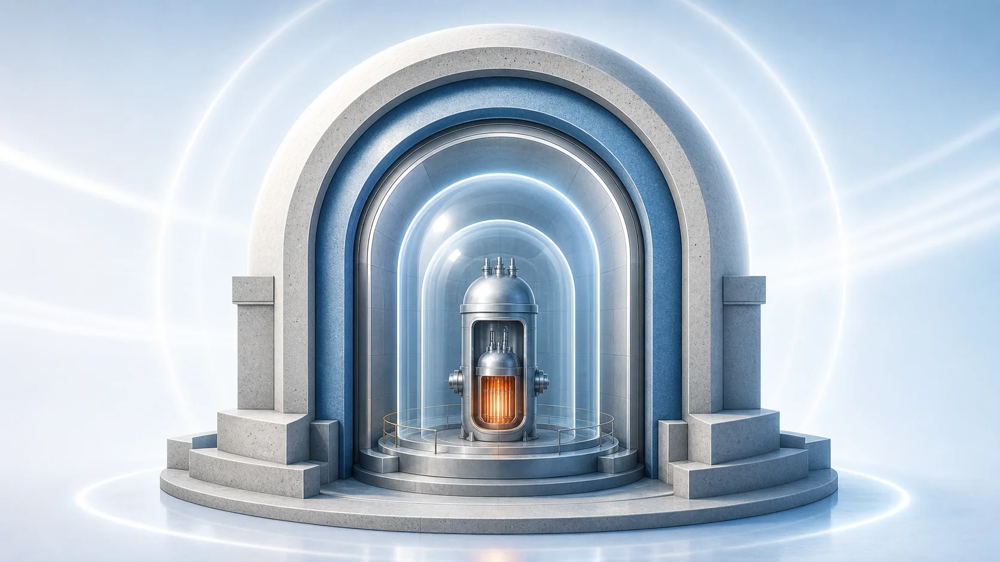
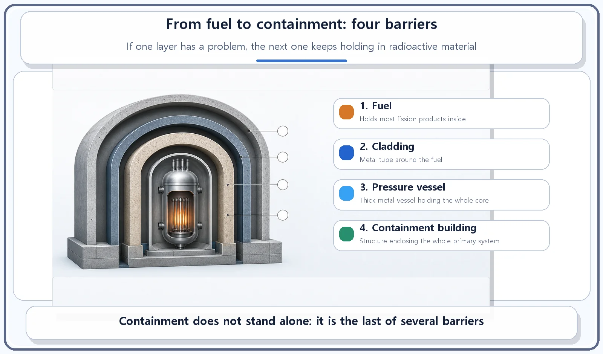

Reactor Components · 064
How Many Layers Do You Wrap a Gift In? — What the Containment Building Holds In
Fuel, cladding, pressure vessel, containment: four independent barriers, so that no single layer has to hold everything in.

The containment building is the last and largest of several independent barriers around a reactor's radioactive material. This thick reinforced-concrete structure encloses the entire primary system. It shields the equipment inside from external hazards and, if radioactive material were ever released inside, keeps it from reaching the environment.
The more precious it is, the more layers it gets
When you give someone something truly precious, one box usually isn't enough. You wrap it in tissue paper, put that in a box, and then wrap the box in gift paper. If one layer tears or comes loose, the next layer is still protecting what's inside.
A nuclear reactor is designed in exactly the same way. The fuel, the fuel cladding and the reactor pressure vessel are each one of these wrapping layers. Today it's time to look at the last layer, the one that wraps everything at the scale of a building: the containment building.
Containment: the last box around the whole reactor
The containment building is a large, thick reinforced-concrete structure that encloses the entire primary system: the reactor pressure vessel, the steam generators, the pressurizer, the reactor coolant pumps and so on. It has two main purposes. The first is to protect the equipment inside from external hazards such as typhoons and earthquakes. The second is that, in the unlikely event radioactive material is released inside the plant, the containment holds it inside the building and keeps it from spreading into the environment.
Containment is designed to be extremely airtight, so that even when the pressure inside rises temporarily, radioactive material does not leak out.

Putting all the barriers in one place
Let's pause and line up the barriers, starting from the inside.
| # | Barrier | What it is |
|---|---|---|
| 1 | The fuel itself | Most fission products stay trapped inside the ceramic fuel |
| 2 | Cladding | The metal tube that encloses each fuel rod |
| 3 | Pressure vessel | The thick metal vessel that holds the whole core |
| 4 | Containment building | The structure that encloses the entire primary system |
Arranging several independent barriers in sequence like this, so that if one barrier has a problem the next one still keeps radioactive material confined, is called the multiple-barrier approach. Like a gift wrapped in many layers, even if one layer weakens, the next layer is still guarding what's inside.
Easy mix-ups
The containment building and the pressure vessel are separate barriers of different size and location. The pressure vessel is the metal vessel that holds the core itself. The containment building is the structure that encloses the whole primary system, pressure vessel included.
Not every building on a nuclear plant site is a containment building. Buildings outside containment, such as the turbine building, are not built as barriers to confine radioactive material. The name "containment" applies only to the building that houses the primary system.
The short version
The containment building is a large, thick structure that encloses the entire primary system, including the reactor pressure vessel. It has two jobs: protecting what's inside from external hazards, and keeping radioactive material inside from leaking out. Fuel, cladding, pressure vessel and containment form a chain of independent barriers, so that if one layer has a problem, the next one still protects, just like a gift wrapped in many layers.
Next, we follow the steam outside to see how it actually makes electricity: the turbine.